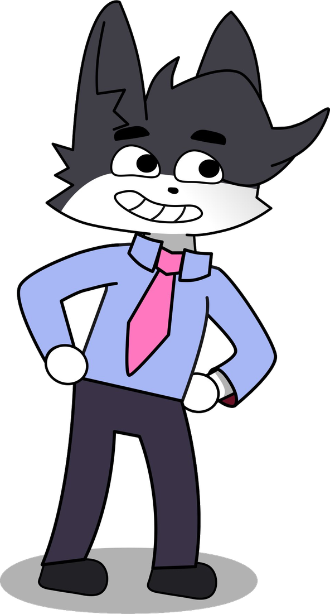

Identidad de marca
Studio
Sistema visual Clover Y5
La identidad de la marca raíz y sus dos sub-marcas, incluyendo este sitio y sus personajes.
Producción audiovisual, identidad y dirección creativa. El mismo rigor de Labs, al servicio de la imagen, el ritmo y el mensaje.

De la idea a la pieza terminada, con una estética propia y consistente.
Video, dirección y postproducción para marcas y proyectos que necesitan contar algo con claridad.
Sistemas visuales completos: logo, paleta, tipografía y las reglas que los mantienen coherentes.
Animación, motion graphics y edición que le dan ritmo y energía a la imagen.
Concepto y dirección de principio a fin, alineando estética y mensaje en cada decisión.
Reemplaza estas tarjetas con tus piezas reales: video, branding o motion.
La identidad de la marca raíz y sus dos sub-marcas, incluyendo este sitio y sus personajes.
Espacio reservado para un proyecto audiovisual: portada, título y una línea de descripción.
Duplica este bloque para sumar tantos proyectos como necesites.
Cotizaciones en MXN. Platiquemos el concepto.